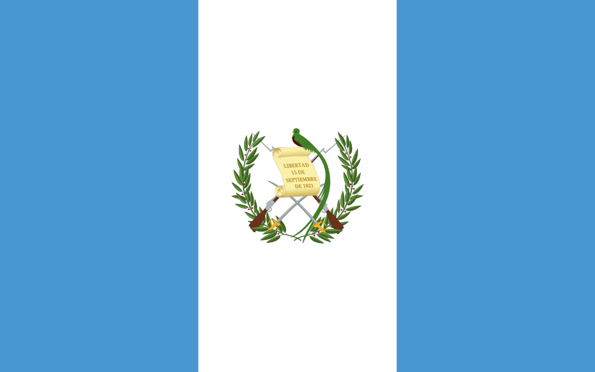

About Me
Hello My name is Boriss Sic and I am from Guatemala, currently I am living in the second most important city in my country called Quetzaltenango. I am pursuing software development degree. I am very excited to continue with this course.
Guatemala, Guatemala
The territory of modern Guatemala hosted the core of the Maya civilization, which extended across Mesoamerica; in the 16th century, most of this was conquered by the Spanish and claimed as part of the viceroyalty of New Spain.
